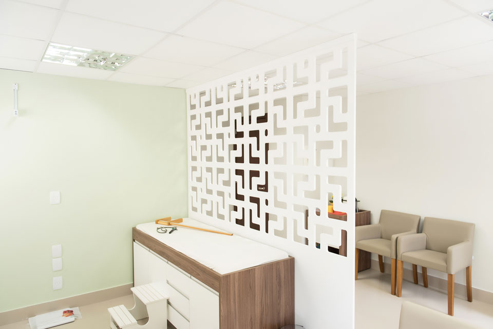
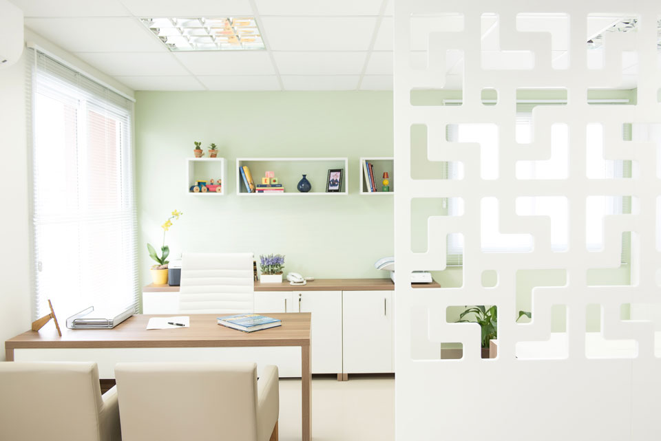
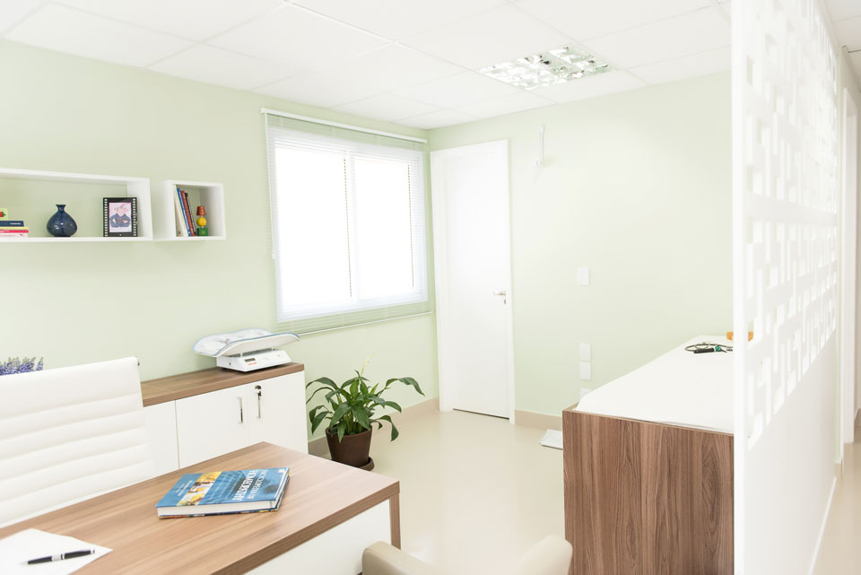
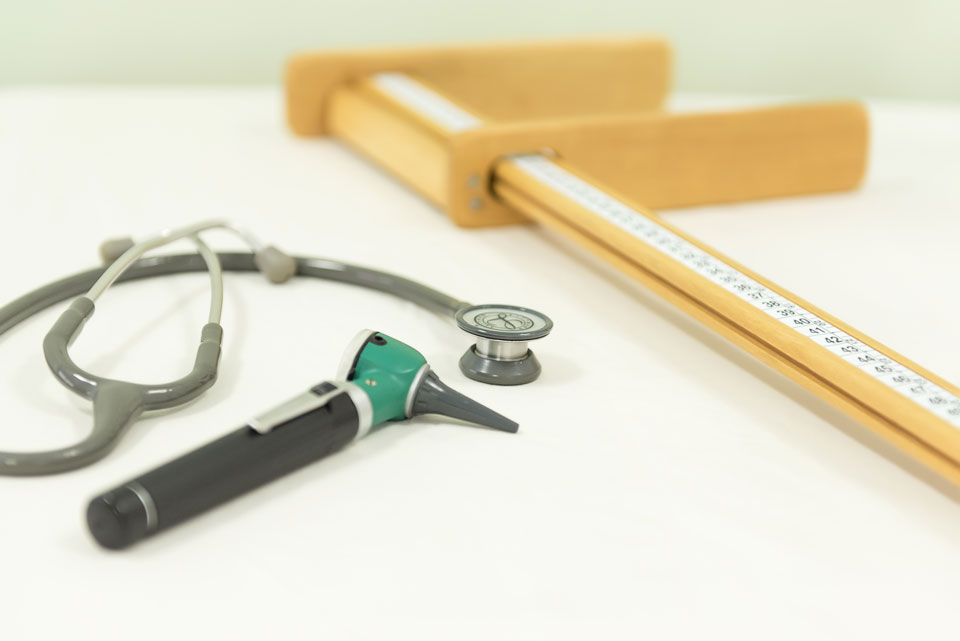
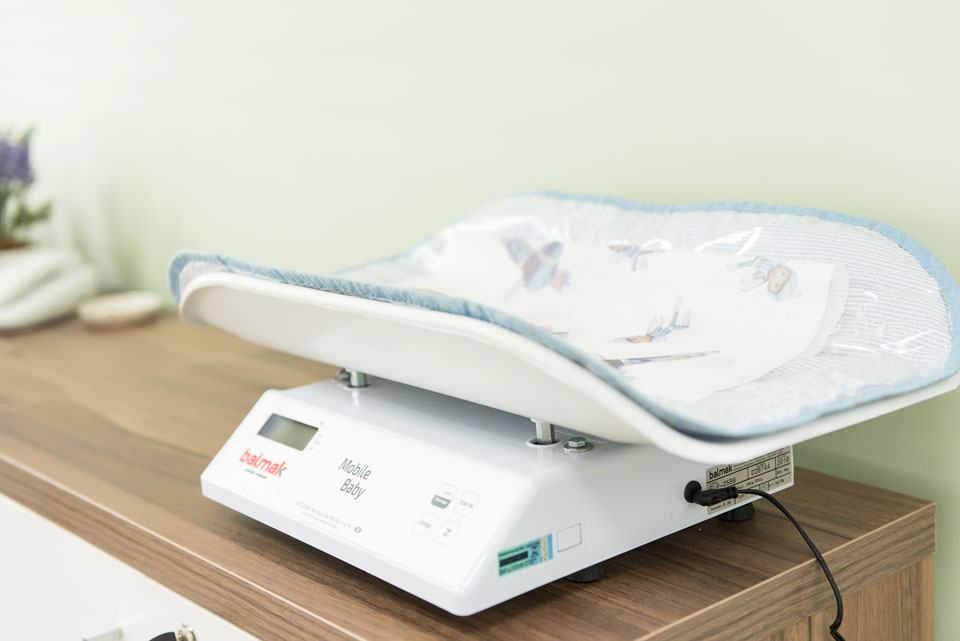
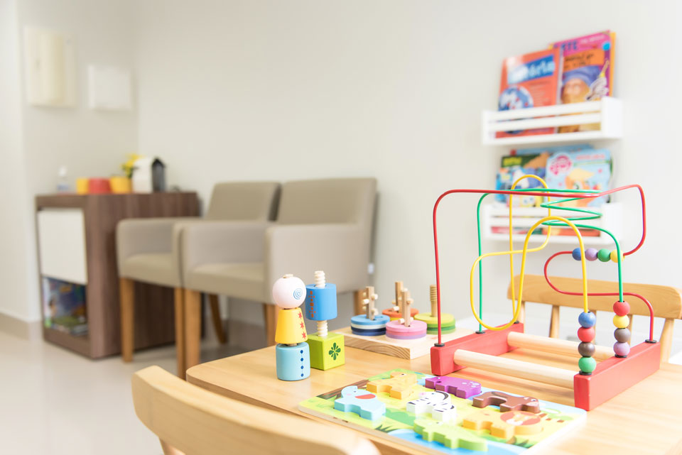
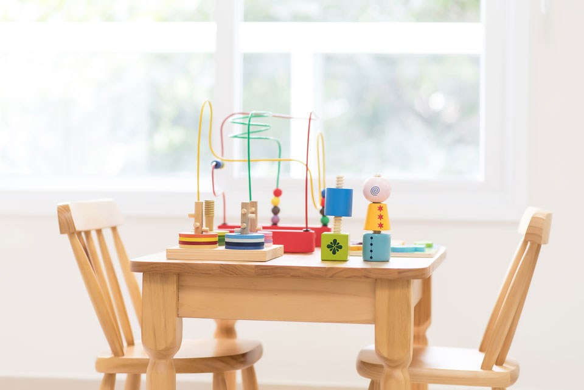
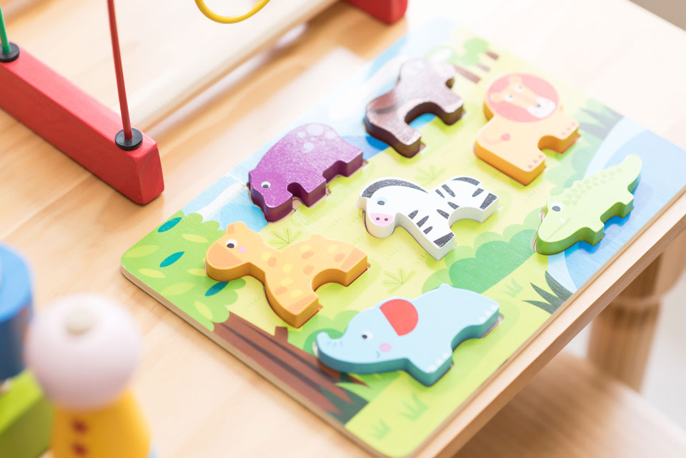

Bebê
O primeiro ano de vida é uma fase de transformações rápidas e intensas. As consultas são mais frequentes, acompanhando ganho de peso, marcos do desenvolvimento, amamentação e o calendário vacinal.
Perdizes · São Paulo
Atendimento médico que compreende a criança como um conjunto único — corpo, emoções e ambiente — combinando o melhor da pediatria tradicional com a homeopatia para tratar não só o efeito, mas a causa.
CRM-SP 74.506 · Formada pela Unicamp · Atendimento particular
Nossa abordagem
Juntas, permitem um entendimento amplo sobre a saúde e as características de cada paciente — olhando para o físico, o emocional e o ambiente que cercam a criança.
Especialidade médica que acompanha a criança desde o nascimento até o início da vida adulta, com consultas regulares de crescimento, desenvolvimento, vacinação e prevenção — a base do cuidado contínuo.
Prática secular, reconhecida como especialidade médica pelo Conselho Federal de Medicina desde 1980, que age equilibrando o organismo como um todo — estimulando a capacidade natural de resposta do próprio corpo.
Acompanhamento contínuo
Cada fase da infância e adolescência tem suas próprias transformações — e o acompanhamento pediátrico se adapta a cada uma delas.
O primeiro ano de vida é uma fase de transformações rápidas e intensas. As consultas são mais frequentes, acompanhando ganho de peso, marcos do desenvolvimento, amamentação e o calendário vacinal.
Fase de muito aprendizado — é quando surgem a linguagem, a marcha independente e as primeiras interações sociais. O acompanhamento ajuda a identificar cedo qualquer sinal que mereça atenção.
É comum, após os dois anos, as visitas ao pediatra ficarem restritas a quadros febris. As consultas de rotina nessa fase continuam essenciais para desenvolvimento, alimentação e imunizações.
As consultas passam a ser anuais, salvo intercorrências. Nelas, avaliamos crescimento, postura, rendimento escolar e hábitos de vida que se consolidam nessa fase.
Fase de muitos questionamentos. Os filhos começam a vislumbrar mais autonomia, e o acompanhamento médico passa a incluir também as mudanças emocionais e comportamentais típicas da adolescência.
Fale diretamente pelo WhatsApp e encontre o melhor horário.
(11) 99854-2925 · Chamar no WhatsApp
Experiência
CRM (SP) 74.506
Já atuou em serviço de Emergência em Pronto Atendimento e em Saúde Escolar, em creche de uma grande empresa. Essa trajetória permitiu reunir diferentes formações para entender o indivíduo como um todo — integrando o tradicional e o natural em cada atendimento.
Confiança de quem já é atendido
Espaço reservado para depoimentos reais de pais e responsáveis atendidos pela Dra. Tereza.
Assim que os depoimentos forem enviados, esta seção é preenchida com o texto, nome e avaliação de cada família — sem necessidade de mexer no restante do site.
Ver perfil no Google MapsConheça o espaço







Onde estamos
Dúvidas frequentes
Optamos por não atender convênios, a fim de preservar a qualidade e o tempo dedicado a cada atendimento. Facilitamos o pagamento via cartão de crédito, Pix ou transferência.
O valor da consulta é R$ 600,00.
O atendimento online ajuda na dinâmica de consulta, mas não substitui o exame físico presencial. A primeira consulta em Homeopatia é mais demorada, pois percorremos todo o histórico do paciente. Algumas reavaliações que não exijam exame clínico também podem ser feitas online.
Consideramos retorno até 30 dias após a última consulta.
Mesmo quando a criança está bem, as consultas regulares de acompanhamento são essenciais para monitorar crescimento, desenvolvimento e vacinação — não apenas quando há sintomas.
Sim! A Sociedade Brasileira de Pediatria recomenda uma consulta com o pediatra a partir da 32ª semana de gestação, para alinhar expectativas sobre os primeiros cuidados com o bebê.
Consultas de urgência de baixa complexidade podem ser feitas no consultório, evitando idas desnecessárias a prontos-socorros.
Avise com a maior antecedência possível para que o horário possa ser remanejado a outro paciente.
Imprevistos acontecem, mas atrasos causam transtorno no atendimento seguinte. Em caso de atraso, entre em contato para reorganizarmos o horário sempre que possível.
Em situações de urgência, ligue ou envie uma mensagem por WhatsApp: (11) 99854-2925.
Agende uma consulta e conheça o atendimento integrativo da Dra. Tereza Barbosa.
Agendar consulta pelo WhatsApp